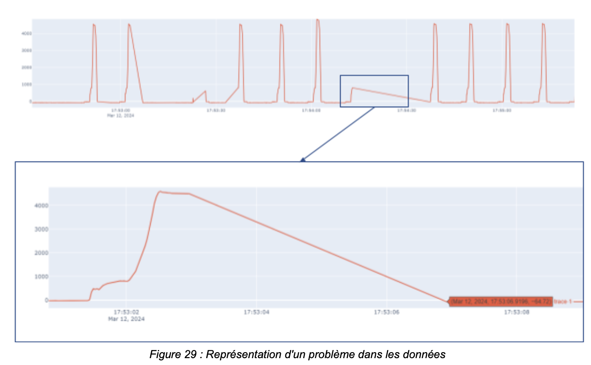
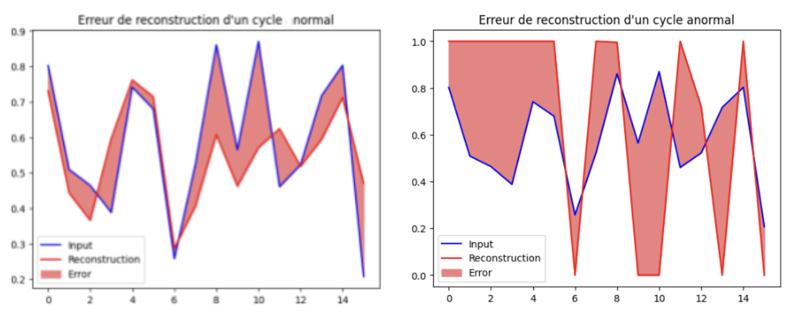

Détection d’anomalies sur cycles industriels – Airbus Atlantic
Projet de traitement et d’analyse de données industrielles visant à détecter automatiquement des anomalies dans les cycles de pose de fixation à partir de données capteurs issues d’une machine de production.
Objectifs du projet :
Transformer des données brutes issues de capteurs industriels en indicateurs permettant d’identifier automatiquement des cycles de production anormaux et faciliter l’analyse pour les équipes de maintenance.
Processus technique
Data pipeline
• Collecte : Extraction de séries temporelles à partir de fichiers industriels SCOP générés par la machine.
• Nettoyage : Correction d’incohérences dans les cycles de production et filtrage des variables pertinentes.
• Transformation et préparation des données : Segmentation des séries temporelles afin d’isoler les cycles de production, normalisation, analyse de corrélation entre variables pour sélectionner les features les plus informatives.
Analyse et détection d’anomalies
• méthodes statistiques basées sur des seuils, quantiles et intervalles de confiance.
• clustering avec K-Means combiné à une ACP pour identifier les cycles atypiques.
• utilisation de l’algorithme Isolation Forest pour la détection d’anomalies multivariées
• implémentation d’un autoencodeur pour détecter les anomalies via l’erreur de reconstruction.
Résultats obtenus :
Mise en place d’un pipeline de traitement permettant de passer de données machine brutes à l’identification de cycles anormaux.
Les résultats sont visualisés via une interface Streamlit facilitant l’analyse par les équipes de maintenance.
Ce projet illustre ma capacité à manipuler des données brutes, appliquer des techniques avancées d’analyse et produire des résultats concrets pour améliorer les processus industriels.

